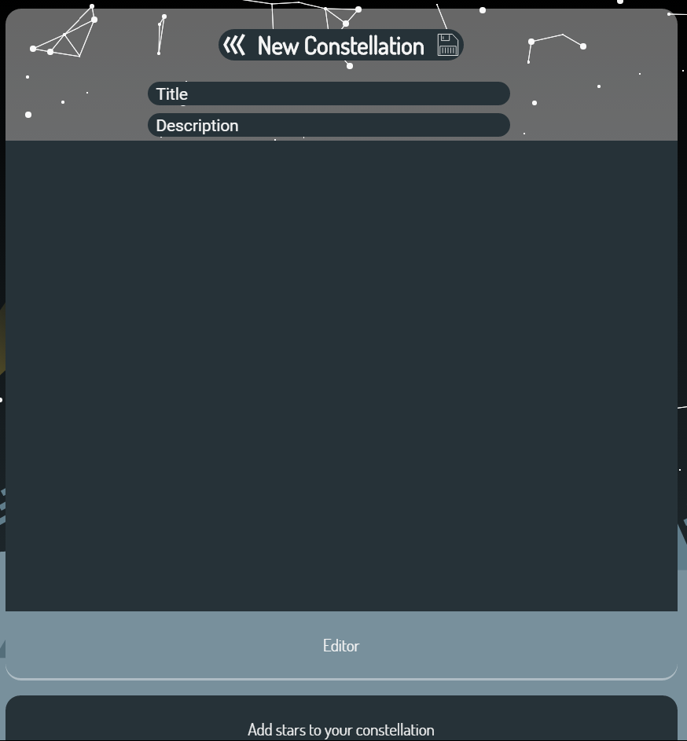
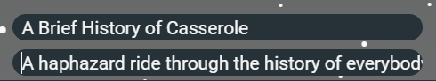
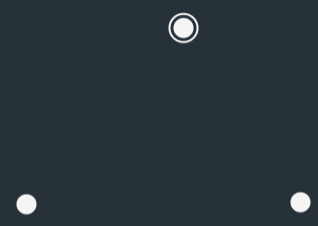
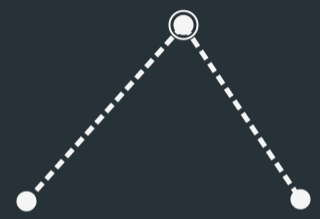
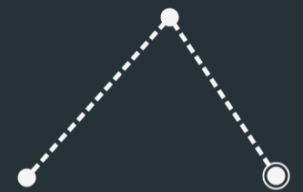
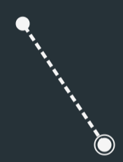

Constellations are easy to create with the nebula tool.
The title and description box should contain all of the basic information about the constellation you're creating.
Stars can be added to the constellation by using the search tool in the bottom, then clicking a star and the add button.

Stars can be moved around in the field by clicking and dragging with the left mouse button.
Stars can be connected to each other by right clicking on one and dragging to another.
By left clicking on any star you can set it as the start point of the constellation.
A right click on a star will delete it from the page.
Clicking the save icon will save the constellation.